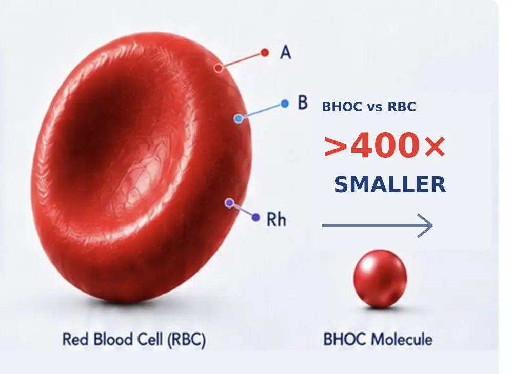

Rescue & Emergency Care
Immediate support for animals in critical need
From Nature. Through Science. Back to Nature.
The BHOC Species & Biodiversity Protection Initiative works at the intersection of science, veterinary medicine and conservation to support the health and survival of animals around the world.
A healthier tomorrow
For Every Species


Different species.
A shared tomorrow.
A world worth protecting

“We be of one blood, ye and I.”
A healthier
tomorrow
For Every Species
Our conservation mission
We support the protection of endangered and Red Book species by advancing veterinary medicine, emergency care, research and international collaboration.
Explore the Red Book ProgramImmediate support for animals in critical need
Improving veterinary care in zoological institutions
Supporting recovery and return to natural habitats
Solutions for wildlife in remote and challenging environments
Global biodiversity context
We recognize the extraordinary contribution of scientists, veterinarians, conservationists, institutions, local communities, and international initiatives already working to protect species and ecosystems around the world.
BHOC has studied the goals and targets of the Kunming-Montreal Global Biodiversity Framework and considered where our own knowledge and capabilities may contribute. Our Species & Biodiversity Protection Initiative is independently aligned with this wider direction, particularly in species recovery, veterinary capacity, knowledge sharing, and access to practical conservation technologies.
This does not imply a formal partnership or endorsement by the Convention on Biological Diversity. It expresses our intention to become a useful part of the existing global conservation ecosystem and to contribute what we know best: oxygen-delivery science developed from principles already created by nature.
Our Focus Areas

Emergency care for wild animals
Conservation of threatened species

Veterinary support and collaboration

Care beyond traditional infrastructure

Cross-species insights for better medicine

A growing scientific foundation

Stronger together for greater impact
Stories That Matter
Lives that remind us why respect across species matters.
The science bridge
BHOC Therapeutics is developing a next-generation oxygen carrier designed to support veterinary medicine, including wildlife, exotic and endangered species. By improving oxygen delivery at the microcirculatory level, we aim to help more animals survive when every second counts.
Discover the Science

Advancing oxygen delivery for a wilder tomorrow.